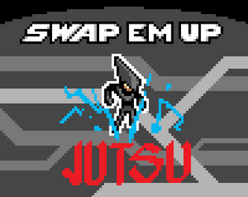

This game was done with a couple of buddies from the 42 school, for the GTMK 2018 gamejam. The theme of the gamejam was “GENRE game, but you can’t MECHANIC”. For this game, that would be beat-em-up/twin-stick shooter, but without being able to shoot/hit enemies.
Instead, the player character has a swap ability, which allows him to switch places with enemy bullets. The player must thus redirect bullets appropriately towards enemies.
Here is a GIF of the game in action:
TODO explain